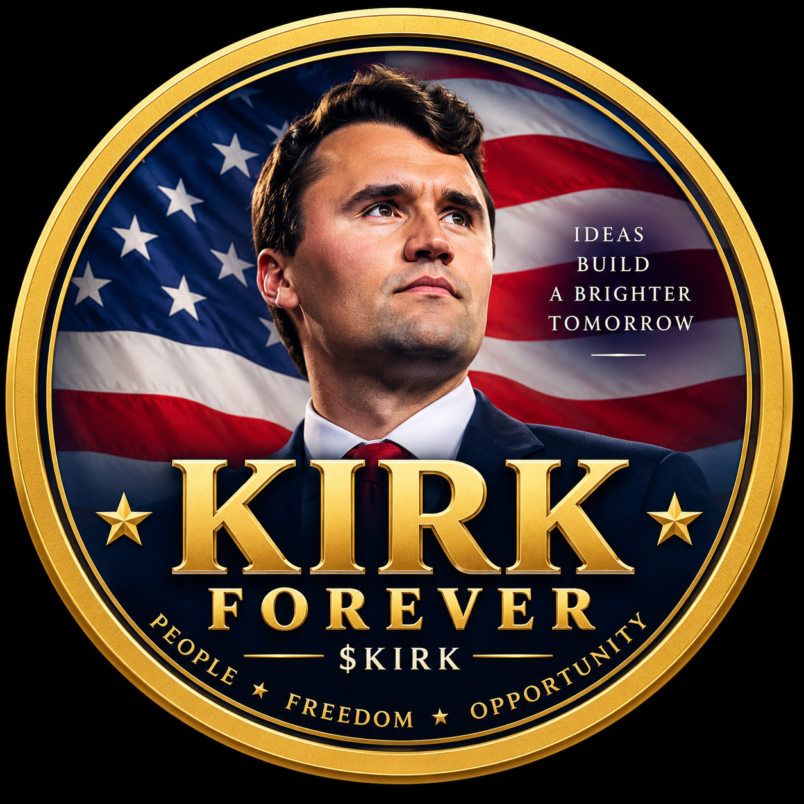

$KIRK
Token Information
Network: Robinhood Chain
Contract address
0x4A114A14517acf7366A7fdd8A233fa4e2dF8EeD1
Always verify the contract address before interacting with the token.
Community First
Kirk Forever is presented as a community-created token and tribute project.
On-Chain
The token is deployed on Robinhood Chain and can be independently checked using the public block explorer.
Transparency
Use the contract address above as the source of truth when verifying the token.
How to Verify
Open the Blockscout link above, confirm the token name is Kirk Forever (KIRK), and verify the contract address matches exactly.
Disclaimer
Kirk Forever (KIRK) is an unofficial, community-created token. It is not affiliated with or endorsed by Charlie Kirk's family or estate, Turning Point USA, Robinhood, or Robinhood Chain. Nothing on this site is financial advice. Digital assets are highly speculative and can lose value.